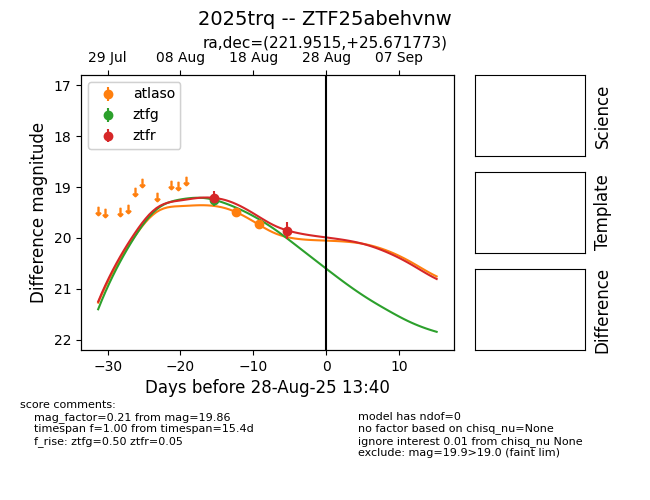

Target 2025trq at 2025-08-26 10:53, see:
FINK: fink-portal.org/ZTF25abehvnw
Lasair: lasair-ztf.lsst.ac.uk/objects/ZTF25abehvnw
ALeRCE: alerce.online/object/ZTF25abehvnw
TNS: wis-tns.org/object/2025trq
YSE: ziggy.ucolick.org/yse/transient_detail/2025trq
alt names
ZTF25abehvnw (ztf,fink)
2025trq (tns,yse)
coordinates:
equatorial (ra, dec) = (221.9515,+25.67177)
galactic (l, b) = (36.3835,+63.95890)
photometry
last atlaso=19.73, ztfg=19.25, ztfr=19.86
2 atlaso, 1 ztfg, 2 ztfr detections
